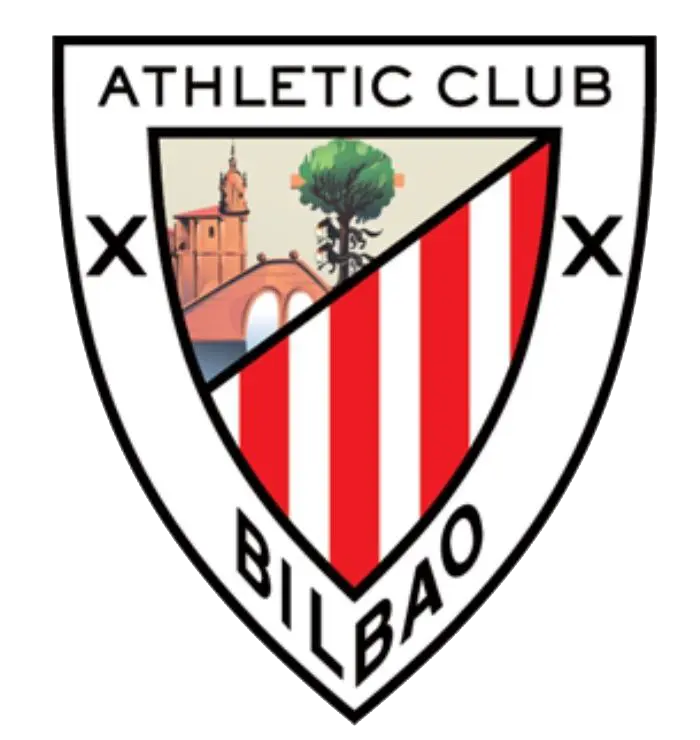

Real Oviedo
Real Oviedo0-0-4
victorias · empates · derrotas

Athletic ClubHistorial del Real Oviedo contra Athletic Club: 4 partidos (0 victorias, 0 empates, 4 derrotas, 1-5 en goles). Último enfrentamiento: Real Oviedo 1-2 Athletic Club (15 feb 2026).
4Jugados
0Victorias
0Empates
4Derrotas
1Goles a favor
5Goles en contra
En casa: 2 partidos (0 victorias). Fuera: 2 partidos (0 victorias). Datos desde la temporada 2010/11.
Nombres del club
También conocido como: Atlético de Bilbao, Athletic de Bilbao.
Todos los partidos
-
15 feb 2026
2025/26 Real Oviedo – Athletic ClubPrimera División · Jornada 24 1-2 -
9 nov 2025
2025/26 Athletic Club – Real OviedoPrimera División · Jornada 12 1-0 -
21 dic 2011
2011/12 Athletic Club – Real OviedoCopa del Rey · 1/16 (Vuelta) 1-0 -
8 dic 2011
2011/12 Real Oviedo – Athletic ClubCopa del Rey · 1/16 (Ida) 0-1